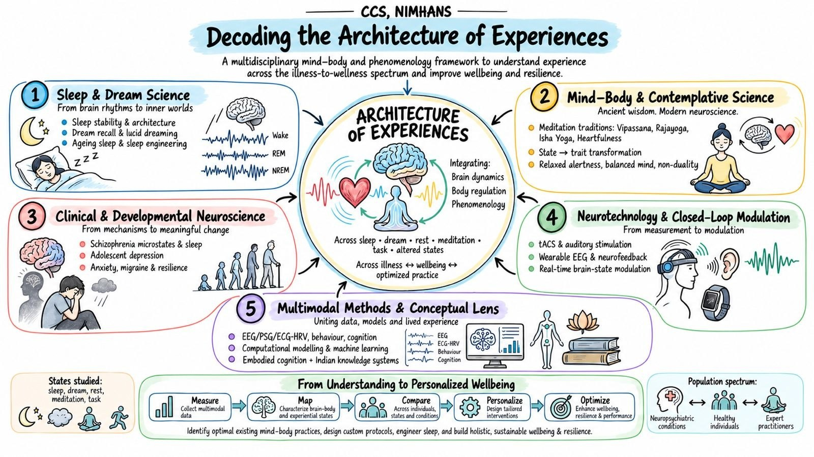
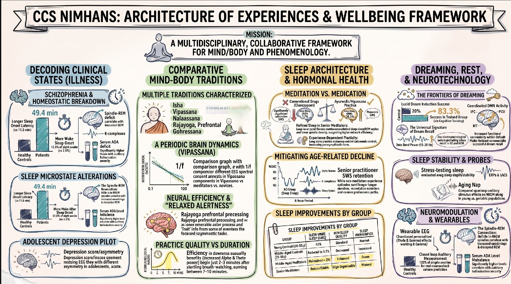

Our research framework
Concepts from neuroscience and Indian philosophical insight, studied across states of rest, task, meditation and sleep, in wellness, normal and illness samples.
Concepts / ideas
Neuroscience
+ Indian philosophical insights
States / levels
RestTaskMeditationSleep
Samples / models
WellnessNormalIllness
Techniques / approaches
Neurophysiological
+ Cognitive neuroscience
Three objectives
- Multidimensional nature of awareness
- Role of brain–body harmony in wellbeing
- Application-oriented research
Three approaches
- Neurophenomenological approaches
- Modern multivariate analysis approaches
- Novel technology for real-world settings


Portfolio at a glance
Sanctioned projects, student and intern work, and the partners who support us, drawn live from the CCS research activity register.
Sanctioned projects by core area
Number of projects
Student & intern projects by core area
Number of projects since 2020
Our funding partners
Organisations supporting sanctioned CCS projects
The four areas in detail
Key findings from our science
Selected results from CCS research on meditation, sleep, illness and dreaming. Figures are reproduced from our published work.